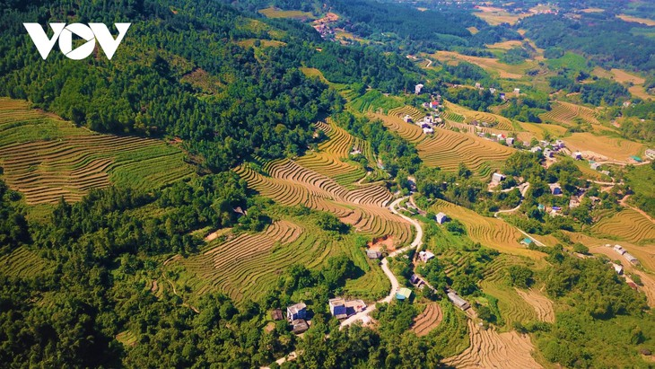
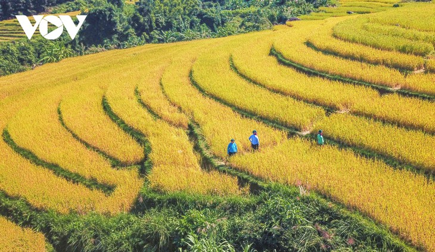
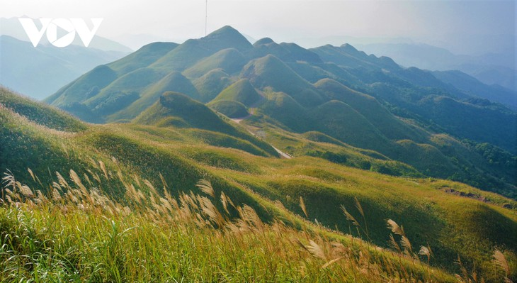
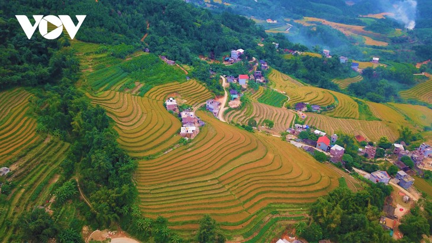
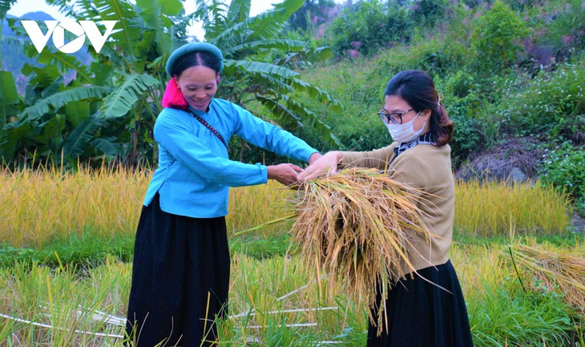

Bình Liêu mùa đông - điểm đến ấn tượng cho du khách
Lúa chín vàng ươm trên những thửa ruộng bậc thang, cánh rừng sở trắng muốt....là những điểm nhấn ấn tượng tại Bình Liêu (Quảng Ninh) mỗi dịp cuối thu, đầu đông.
Lúa chín vàng ươm trên những thửa ruộng bậc thang, cánh rừng sở trắng muốt và “sống lưng khủng long” bạt ngàn bông lau đan xen sắc màu văn hóa độc đáo của người Dao, Sán Chỉ, Tày là những điểm nhấn ấn tượng tại Bình Liêu (Quảng Ninh) mỗi dịp cuối thu, đầu đông.
Từ ngày Hội mùa vàng 2020, du khách dần biết tới Bình Liêu với những thửa ruộng bậc thang đầy ắp lúa chín vàng, cung đường biên hùng vĩ, lau trắng bạt ngàn, khu rừng sở, hồi, quế xanh ngát tỏa hương thơm bên những con suối, thác nước.
Nằm ở phía Tây núi Cao Xiêm với độ cao từ 300 - 600m so với mực nước biển, ruộng bậc thang ở thôn Ngàn Pạt, Cao Thắng, Khe O (xã Lục Hồn, huyện Bình Liêu) tạo nên cảnh quan vô cùng ấn tượng.
Đầu tháng 11, hàng trăm ha ruộng bậc thang Bình Liêu vào mùa gặt, trên khắp những thửa ruộng bậc thang, đâu đâu cũng thấy màu áo xanh lam của người Sán Chỉ, áo đỏ của người Dao, áo chàm của người Tày đang rộn ràng thu hoạch, tạo nên bức tranh nhiều màu sắc.
Đan xen giữa "sóng lúa vàng" là những bản làng của người Dao, người Sán Chỉ.
Đầu tháng 11, hàng trăm ha ruộng bậc thang Bình Liêu vào mùa gặt, trên khắp những thửa ruộng bậc thang, đâu đâu cũng thấy màu áo xanh lam của người Sán Chỉ, áo đỏ của người Dao, áo chàm của người Tày đang rộn ràng thu hoạch, tạo nên bức tranh nhiều màu sắc.
Đến với Bình Liêu vào mùa gặt, du khách sẽ được trải nghiệm gặt lúa cùng bà con trên ruộng bậc thang.
Ấn tượng hơn là hành trình men theo đường tuần tra biên giới. Những cung đường uốn lượn quanh dãy núi non hùng vĩ lên các mốc biên giới 1300, 1302, 1305 và 1327.
Du khách đến Bình Liêu sẽ có trải nghiệm tuyệt vời bởi vẻ đẹp thiên nhiên hùng vĩ cùng những nét văn hóa đặc trưng của đồng bào dân tộc Tày, Sán Chỉ, Dao nơi đây